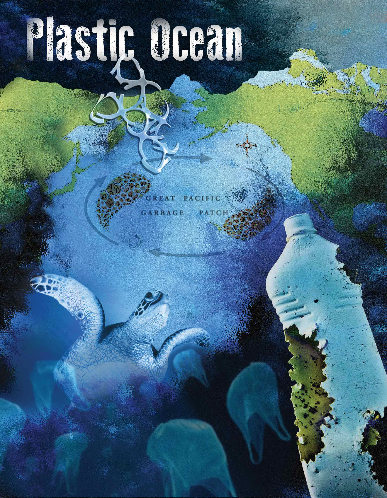
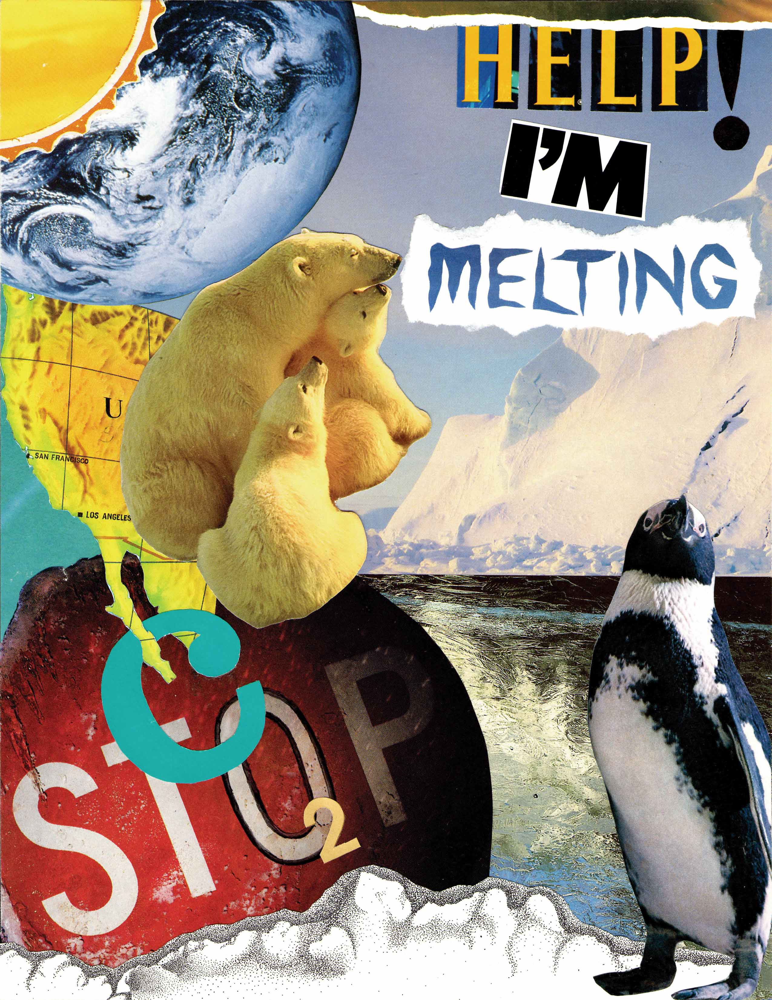

Editorial Collage
Goal: For the analog editorial collage, the goal was to create a collage using clippings from newspapers, magazines or other printed materials and had to be based on literature or journalism. As for the digital collage, the design had to be made by using scans from newspapers, magazines, digital photos or other digital materials. The concept was to be based on on a magazine or news article and the collage had to connect with the narrative provided by the article. The design had to include an appropriate font style and show the use of various tools in photoshop.
Digital poster

Analog poster
